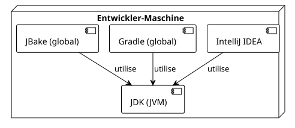

Artikel 0: Einrichtung der Umgebung zum Erstellen von Gradle-Plugins
Publié le 22 September 2025
Einleitung
Um Gradle-Plugins effizient zu entwickeln, ist eine gut konfigurierte Entwicklungsumgebung unverzichtbar. Ein gutes Setup spart Ihnen Zeit, reduziert Frustrationen und gewährleistet die Konsistenz Ihrer Builds.
Dieser Leitfaden konzentriert sich auf vier wesentliche Säulen:
-
Le JDK(Java Development Kit), weil Gradle und JBake auf der JVM ausgeführt werden.
-
Un IDEmodern (IntelliJ IDEA) mit gutem Support für Kotlin und Gradle.
-
Gradleer selbst, um Projekte zu initialisieren.
-
JBake, der Motor unserer statischen Seite.

1. Das JDK : Der Gradle-Motor
Gradle ist eine Anwendung, die auf der Java Virtual Machine (JVM) ausgeführt wird. Daher ist die Installation eines JDK eine absolute Voraussetzung.
Welche Version wählen?
Es wird empfohlen, eine LTS-Version (Long-Term Support) von Java zu verwenden. Derzeit,JDK 17 ou JDK 21sind exzellente Optionen.
Installation über SDKMAN! (Empfohlen)
SDKMAN! ist ein großartiges Tool zum Verwalten der Versionen vieler SDKs, einschließlich Java und Gradle.
SDKMAN! installieren
curl -s "https://get.sdkman.io" | bash source "$HOME/.sdkman/bin/sdkman-init.sh"Eine JDK-Version installieren
# Pour lister les versions de Java disponibles sdk list java
# Pour installer Java 17 (par exemple, la distribution Temurin)
sdk install java 17.0.8-temInstallation überprüfen
java -versionDu solltest die gerade installierte Version angezeigt sehen.
2. Die IDE : IntelliJ IDEA
Für die Entwicklung von Gradle-Plugins mit dem Kotlin-DSL,IntelliJ IDEAist das Werkzeug der Wahl. Seine Integration mit Gradle und Kotlin ist unübertroffen.
-
Community Edition:Kostenlos und völlig ausreichend, um zu beginnen.
-
Ultimate Edition :Kostenpflichtig bietet sie erweiterte Funktionen für die Web- und Datenbankentwicklung.
Lade die für dich passende Version von der JetBrains-Website herunter: https://www.jetbrains.com/idea/download/
Die IDE wird Ihre Dateien automatisch erkennen`build.gradle.kts` et settings.gradle.kts, bietet Ihnen eine leistungsstarke Autovervollständigung, Code-Navigation und integrierte Debugging-Tools.
3. Gradle: Das Build-Tool
Obwohl jedes Projekt seine eigene Gradle-Version über den Gradle Wrapper verwendet, ist es nützlich, eine globale Gradle-Installation für Aufgaben wie die Initialisierung neuer Projekte zu haben (gradle init).
Installation über SDKMAN!
Wie beim JDK vereinfacht SDKMAN! die Installation von Gradle.
Gradle installieren
sdk install gradleInstallation überprüfen
gradle -vDieser Befehl zeigt die verwendeten Versionen von Gradle, Kotlin, Groovy und JDK an.
4. JBake : Der statische Seiten-Generator
JBake ist das Werkzeug, das wir verwenden werden, um unsere Quelldateien (wie diese) in eine statische Website zu verwandeln. Eine lokale Installation ist praktisch, um Änderungen vorzuschauen.
Installation über SDKMAN!
Wie bei den anderen Tools ist SDKMAN! die einfachste Methode.
JBake installieren
sdk install jbakeInstallation überprüfen
jbake -vDieser Befehl zeigt die JBake-Version und die Informationen der Java-Umgebung an, die er verwendet.
5. Der Gradle Wrapper: Die absolut beste Praxis
Sobald Ihr Projekt erstellt ist (was wir im nächsten Artikel sehen werden), sollten Sie den globalen Befehl nicht mehr verwenden.gradle. Stattdessen werden Sie es verwenden.Gradle-Wrapper(`./gradlew`ein in Ihr Projekt eingebundenes Skript.
Warum?
-
Reproduzierbarkeit:Der Wrapper garantiert, dass jede Person, die an dem Projekt arbeitet (einschließlich Ihres CI/CD-Servers), genau diegleiche Version von Gradle, beseitigt damit Build-Fehler, die durch unterschiedliche Umgebungen verursacht werden.
-
Einfachheit :Es ist nicht notwendig, Gradle manuell zu installieren, um an einem Projekt mitzuwirken.
Es reicht, das Repository zu klonen und zu starten`./gradlew`.
Ein typischer Befehl würde so aussehen:
# Ne pas faire : gradle build
# À faire :
./gradlew build6. Docker und Portainer: Für reproduzierbare Builds (Optional)
Obwohl sie nicht zwingend erforderlich sind, um ein Plugin zu schreiben, sind Docker und Portainer moderne DevOps-Tools, die die Erstellung reproduzierbarer Builds und die Verwaltung Ihrer Umgebung erheblich erleichtern.
Installation von Docker Engine
Docker ermöglicht Ihnen, Ihre Anwendung und ihre Abhängigkeiten in einem Container zu verpacken.
Docker über das offizielle Skript installieren :
curl -fsSL https://get.docker.com -o get-docker.sh sudo sh get-docker.shDocker ohne sudo verwalten (empfohlen):
Fügen Sie Ihren Benutzer der Gruppe hinzu`docker`.
sudo usod -aG docker $USERdocker run hello-worldDocker mit Portainer (GUI) verwalten
Portainer ist eine leichte Weboberfläche zur Verwaltung Ihrer Docker-Container.
Ein Volume für die Daten von Portainer :
docker volume create portainer_dataPortainer-Container starten :
docker run -d -p 8000:8000 -p 9443:9443 --name portainer --restart=always -v /var/run/docker.sock:/var/run/docker.sock -v portainer_data:/data portainer/portainer-ce:latestSie können jetzt auf die Portainer-Oberfläche zugreifen auf`https://localhost:9443`.
Fazit
Ihre Umgebung ist jetzt bereit! Sie verfügen über ein JDK, die am besten geeignete IDE, Gradle und JBake. Mit der Hinzufügung von Docker sind Sie auch bereit, containerisierte und reproduzierbare Builds zu erstellen. Diese solide Basis wird es Ihnen ermöglichen, sich auf das Wesentliche zu konzentrieren: die Entwicklung leistungsstarker und nützlicher Plugins.
Im nächsten Artikel werden wir den Befehl verwenden`gradle init`um die Struktur unseres ersten Plug‑in‑Projekts zu generieren.